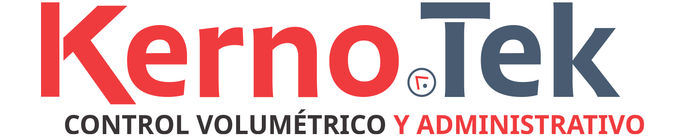

Hello everyone!
Thank you for taking the time to check out my portfilio. I'm currently in the process of shaping it with new projects that reflect my growth as a web developer.
I recently finished my Univesity studies, but I already have several years of experience in the IT world, mainly in technical support. That experience has provided me with a strong foundation in problem-solving and attention to detail, qualities that I now apply to my journey in Web Development.
I dedicate myself to learning new technologies and improving my skills so I can contribute to meaningful real-world projects.
I look forward to any opportunity to collaborate and continue growing professionally
I'd love to connect with you soon!


Academic Trajectory
Unversidad Virtual del Estado de Guanajuato
June 2021 - January 2025
Computer Systems Engineering
Specializing in web and mobile application development
Knowledge
DataBases: MySql
Mobil: Java (AndroidStudio), Swift(Xcode)
WebDevelopment: HTML, CSS, JS, PHP
Frameworks
AngularJS
VueJS
Employment History
Kernotek
December 15 2021 - Current
Level 2 Technical Support Specialist
Key Responsabilities
Database Administrator: Manage client databases
On-site Network Management: Administer local networks, including computers, servers, printes, antennas, etc.
Mobile Device Software Analysis: Troubleshoot and resolve software issues on mobile devices
Log Analysis and Diagnostics: Review system logs to diagnose and troubleshoot issues
Customer Support: Provide exceptional customer service
Incident Maganement: Follow up on and revolve reported issues and incidents
CRM Ticketing: Log and track issues using a CRM platform
Customer-Focused Problem Solving: Offer client-oriented solutions to technical problems
Interests

These days, I´m mostly into three things (though I´m always open to more):
Gaming - especially platform and horror/thriller games
3D modeling- mostly for game stuff
Photography - love shooting outdoors and cool architecture